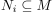
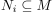
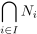
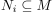

Schnitt von Untermoduln als Untermodul
1. Satz
Sei  ein $R$-Modul über einem kommutativen Ring
ein $R$-Modul über einem kommutativen Ring  und  Untermoduln.
Dann ist
und  Untermoduln.
Dann ist

1
ebenfalls ein Untermodul
Sei ein $R$-Modul über einem kommutativen Ring und  Untermoduln.
Dann ist
ebenfalls ein Untermodul